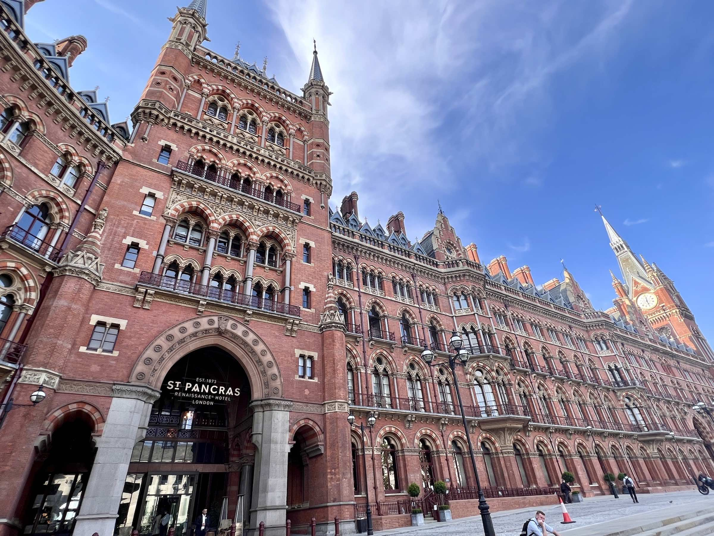
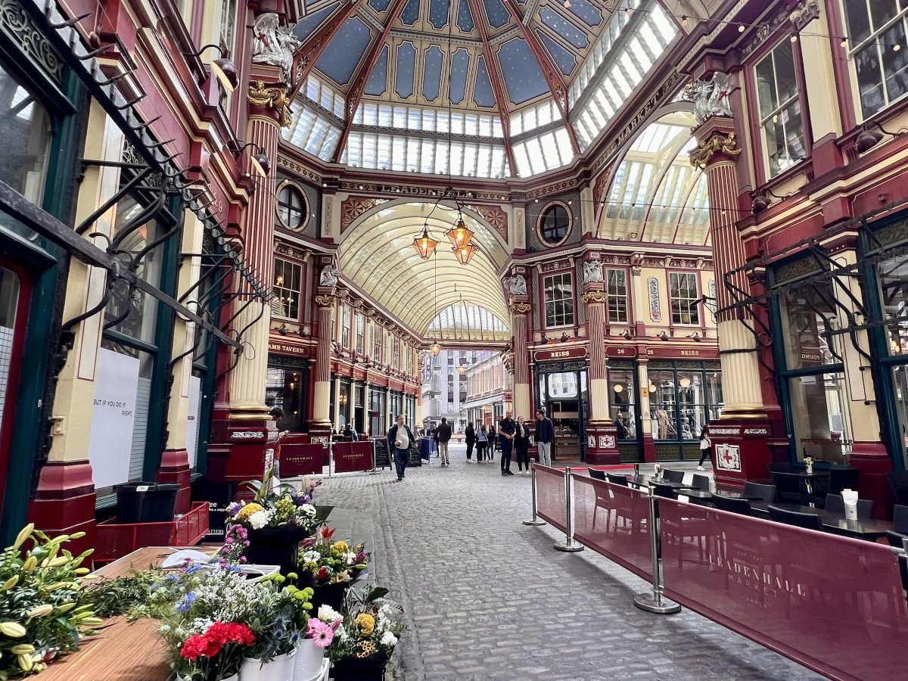
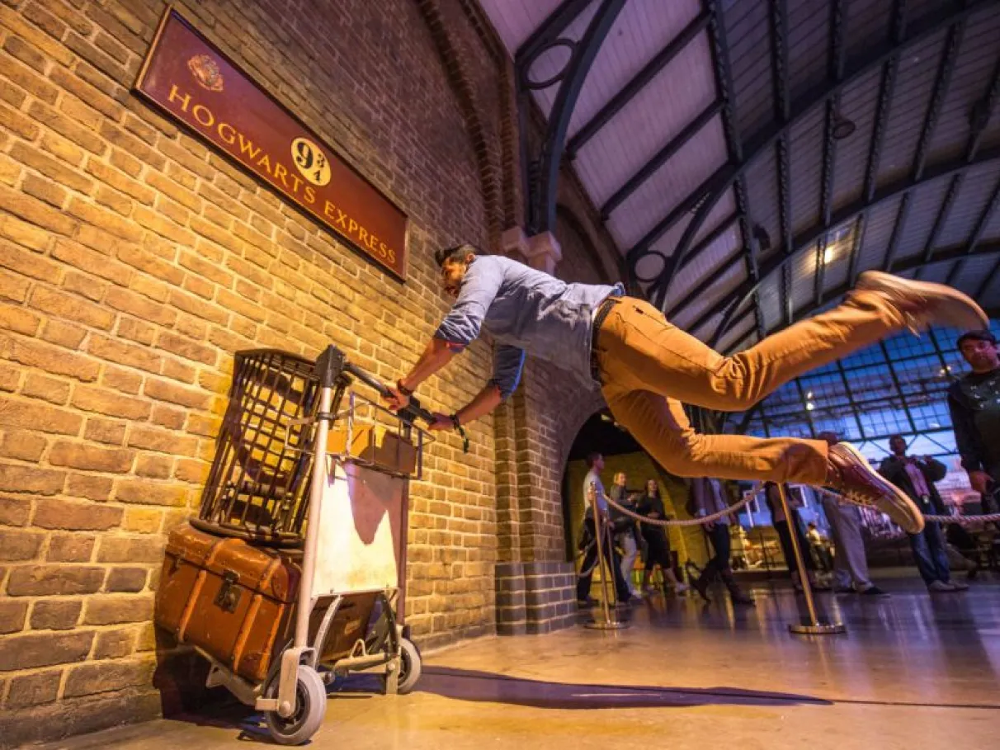
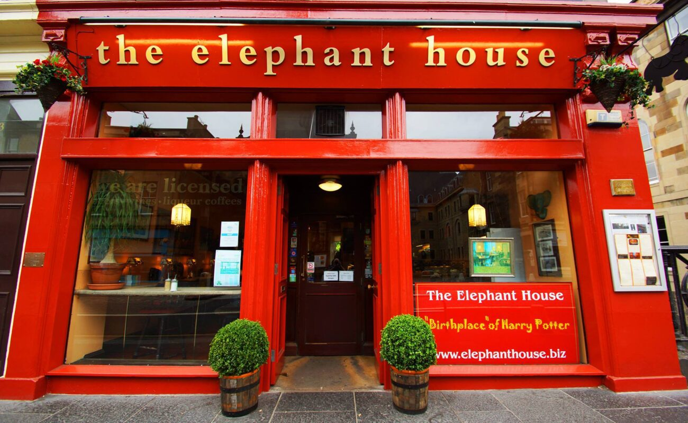

Nossos Pacotes de Viagem
Tour Londres Mágica
Descubra os segredos por trás das filmagens de Harry Potter com nosso Tour Londres Mágica. Caminhe pelas ruas de Londres e explore locais icônicos como a Plataforma 9¾ na estação King’s Cross, o mercado Leadenhall que serviu de inspiração para o Beco Diagonal, e o Millennium Bridge, que aparece em cenas emocionantes dos filmes. Este tour é perfeito para aqueles que desejam vivenciar o mundo bruxo no coração da cidade que inspirou tantos momentos mágicos.
  Visita aos Estúdios da Warner Bros.
Entre no mundo dos filmes de Harry Potter com nossa visita guiada aos estúdios da Warner Bros. em Leavesden. Veja de perto os cenários autênticos, como o Salão Principal de Hogwarts, o escritório de Dumbledore, e a cabana de Hagrid. Admire os figurinos originais, veja as criaturas mágicas ganharem vida, e caminhe pelo Beco Diagonal. É uma experiência imperdível para qualquer fã, com momentos que vão desde a entrada triunfal até a loja de lembranças no final da visita, onde você pode adquirir varinhas, capas e outros itens icônicos da saga.


Aventura em Edimburgo
Explore a cidade que inspirou J.K. Rowling na criação de Harry Potter com nosso pacote Aventura em Edimburgo. Visite o café onde Rowling escreveu os primeiros capítulos da série, passeie pelo majestoso Castelo de Edimburgo e descubra os locais que inspiraram as descrições de Hogwarts e outras locações mágicas. Além disso, explore os cemitérios e ruas estreitas que deram vida a personagens inesquecíveis. Este pacote é uma verdadeira imersão na mente da autora e uma oportunidade de caminhar pelos mesmos passos que ela percorreu durante a criação da saga.
